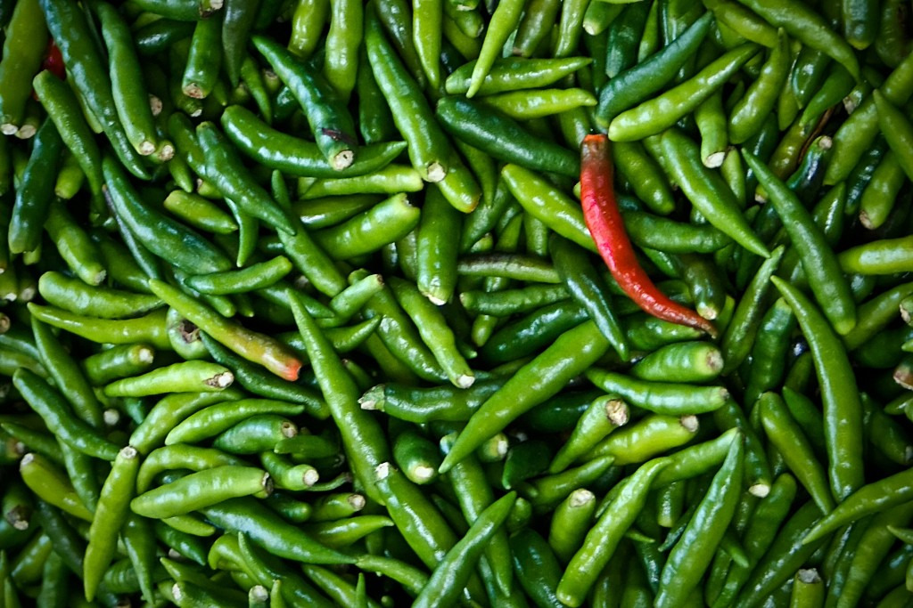
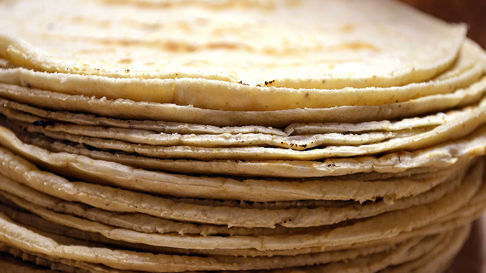
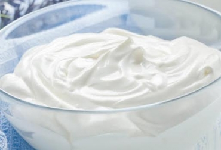

Welcome to The Chilli World
Descubre mi platillo favorito

Chiles desflemados
Los chiles desflemados son cruciales para la preparación de las enchiladas.
Los chiles hehcos salsa son lo que le da el sabor primario al alimento y brinda color al platillo.

Tortillas fritas
Las tortillas fritas levemente en aceite le dan un sabor extra a el maíz.
La tortilla envuelve el alimento y puede tener por dentro muchos complementarios como:
pollo, carne verduras o papa.

Crema y queso para decorar
Estos dos ingredientes nos ayudan a complementar el sabor de las enchiladas.
La cremosidad y la textura del queso crea una explosión de sabor que complementa la comida de cualquier mexicano.